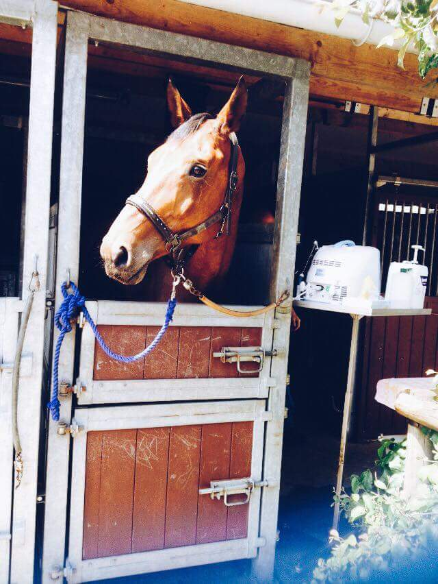
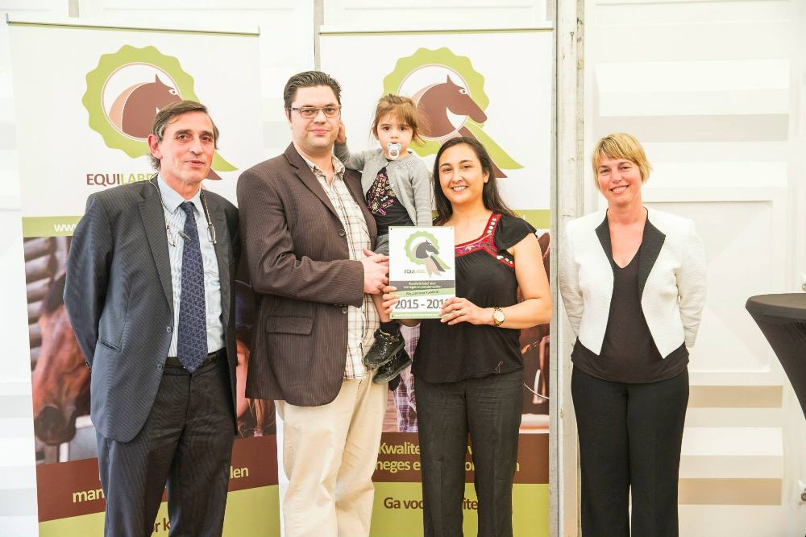

September 2015

Ons eerste veulen is op komst!
De dracht van onze merrie Fortuna werd bevestigd. Als alles goed verloopt,
verwachten we rond mei/juni volgend jaar een klein 'Victorietje'.
Juni 2015
Naar aanleiding van onze erkenning door het Equilabel, is er een leuk artikel verschenen over Victory Stables in het in de paardenwereld zeer bekende tijdschrift 'Hippo Revue'.
Januari 2015
Ons hard werken wordt beloond! Wij kregen de erkenning van het Equilabel. Het certificaat werd persoonlijk overhandigd door minister Schauwvlieghe.